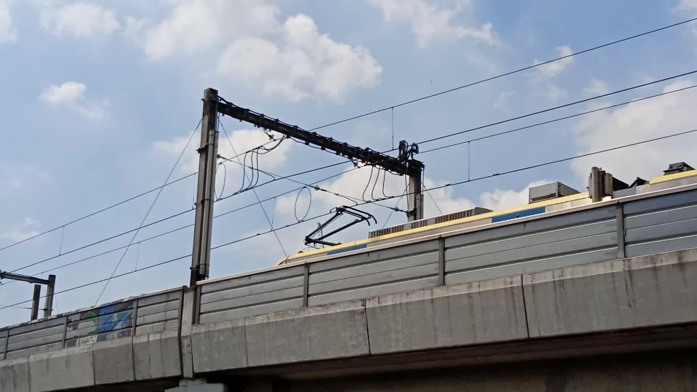

LRT-1 trainspotting
In this page, its all about the LRT-1 trainspotting anywhere by Justin by taking photos and videos.
Trainspotting at home
Justin start his first trainspotting on August 3, 2021 as photos.
First photo of LRT-1 from his house. Taken on August 3, 2021
His video for trainspotting was caught on August 21, 2021 for the first time.
First trainspotting video at 4th floor of the house. Taken August 21, 2021 at 6:52 AM
In September 14, 2021, his trainspotting video was uploaded on YouTube.
His second LRT video was caught and uploaded on YouTube in September 14, 2021. He titled as first because he upload the LRT video on YouTube for the first time.
Video
As he continues to stay at top of his home, he now doing trainspotting activities as any as he can. In November 5, 2022, he decided to go up to 4th floor to do trainspotting and 12 trains spotted, and sadly, the last video for trainspotting in that place.
His final images of LRT-1 at top of his home was on November 15, 2022. And finally in November 25, 2022, he moved to new home. He miss all the activities were he doing trainspotting without leaving the house. He now proceed to Pasay Rotonda trainspotting.
Trainspotting at EDSA-Taft Pasay Rotonda

His first trainspotting video at Pasay Rotonda. Taken on November 10, 2022.
Video
Justin started to trainspoting since November 10, 2022. He so excited for his first trainspotting video. On the following days, Justin are able to doing trainspotting anywhere at Pasay Rotonda.
These are the places in Pasay Rotonda where Justin doing trainspotting:
| Place | Date started | Image |
|---|---|---|
| Metro Point sidewalk | November 10, 2022 | |
| LRT-MRT footbridge | November 23, 2022 | |
| Front of McDonald's | December 2, 2022 | |
| Pasay Rotonda footbridge Above EDSA |
December 11, 2022 | |
| Pasay Rotonda footbridge Above Taft Avenue West |
December 11, 2022 | |
| EDSA-Taft | December 13, 2022 | |
| Pasay Rotonda footbridge Above Taft Avenue East |
December 15, 2022 | |
| Pasay Rotonda footbridge To LRT-1 EDSA |
December 15, 2022 | |
| MRT-3 Taft Avenue footbridge | December 15, 2022 | |
| EDSA Sidewalk | December 22, 2022 | |
| Footbridge top of LRT-1 EDSA | January 3, 2023 | |
| Two Shopping Center footbridge | February 6, 2023 |
Until today, he continue to doing trainspotting at Pasay Rotonda for subscribers and views.
Click here for more LRT-1 Pasay Rotonda trainspotting contents.